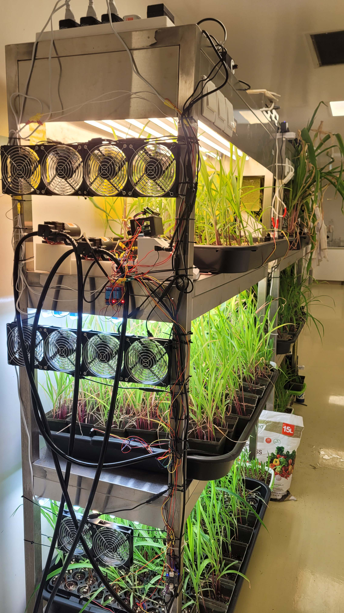
Corn Rack Unit_1.0
The first generation of CORN-DRIVE system that utlizes two microcontrollers to detect water levels, temperature, humidity, TDS, and pH and controls multiple pumps, light timing, and wind speed.

Corn Rack Unit_2.0
The second generation racks that optimizes on the findings from the first generation system and utilizes a modular controller platform that detect the levels of water, TDS, temperature, and humidity and prodives control to the pumps and light timing.
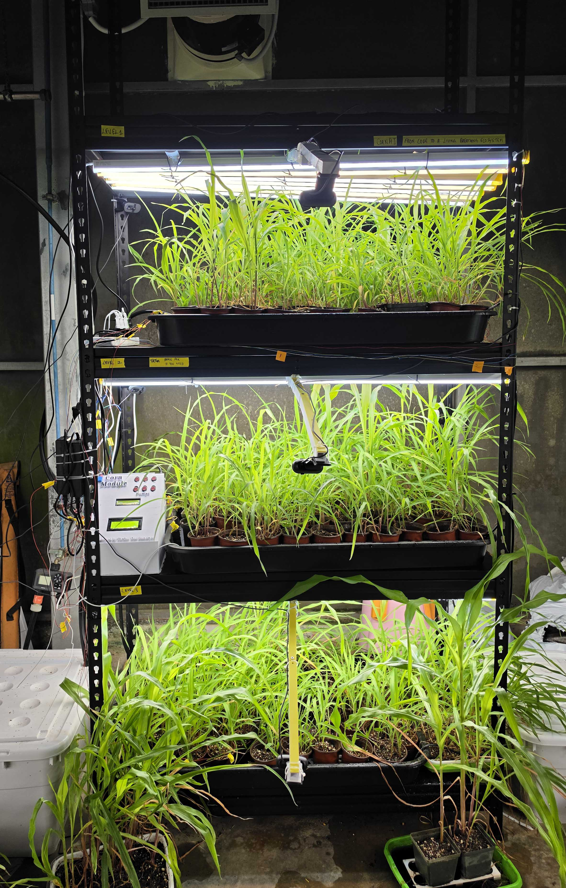
Corn Rack Unit_3.0
The CORN-DRIVE: Neural Rack (running corn_AI_v1.0) is an autonomous indoor cultivation platform that replaces traditional timer-based irrigation with real-time Vision-Defined Actuation (VDA). By fusing low-cost edge AI with embedded robotics, it continuously monitors visual plant phenotypes to deliver water and nutrients precisely when the crop's biological state demands it.
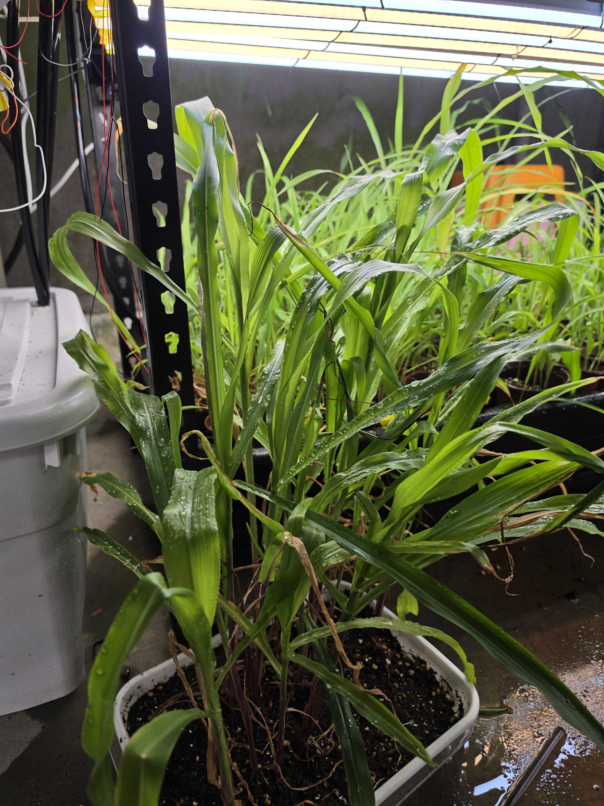
Corn growth_5 weeks
Corn plants growing in a microgreen tray for around 5 weeks.
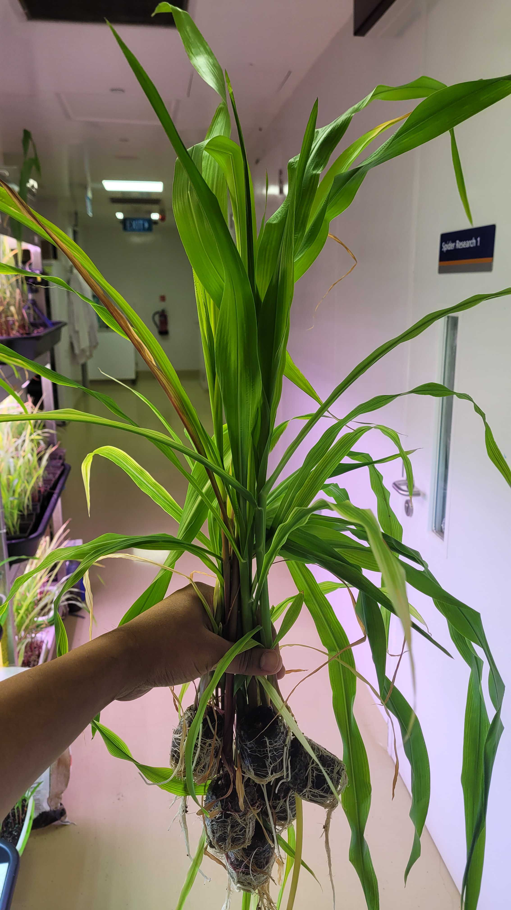
Corn harvest
Corn plants harvested after 5 weeks of growth
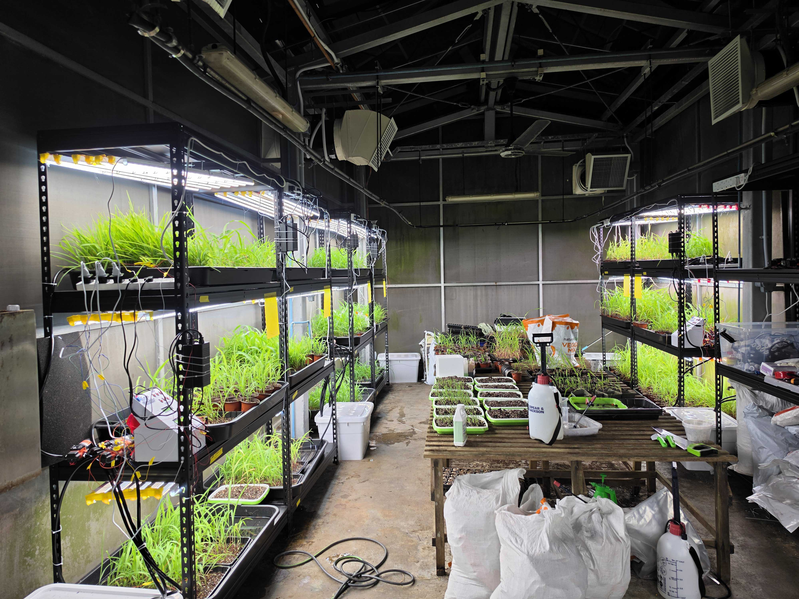
Corn Greenhouse
An early photograph of the greenhouse showing the CORN-DRIVE under construction.
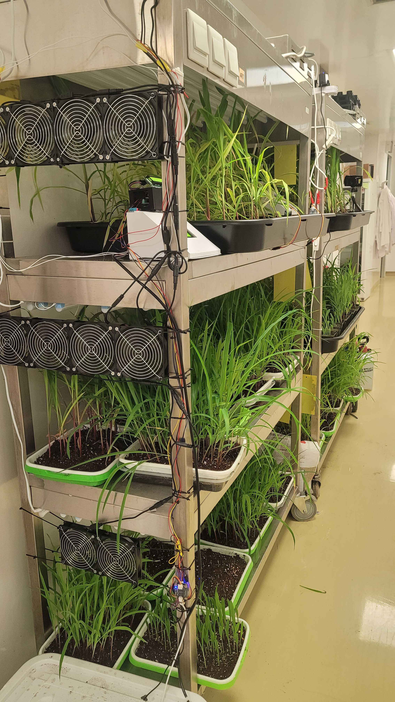
Corn Rack Unit_1.0
Corn rach_1.0 with the lights off state.
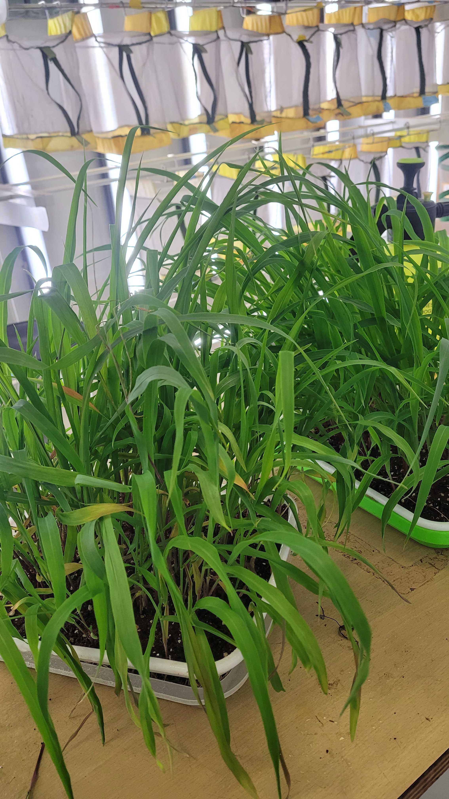
Corn harvest
Corn harvest after 4 weeks of growth in microgreen trays.
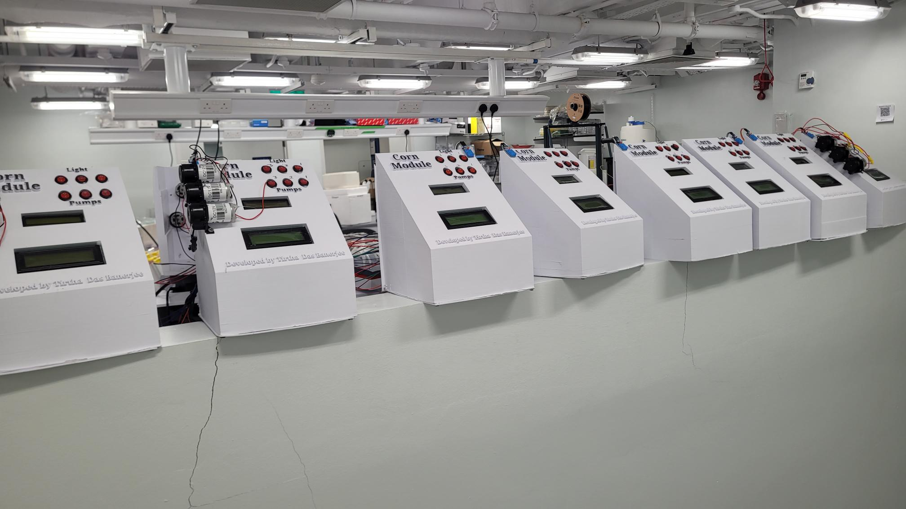
Corn Modules
An array of corn modules under contruction at NUS.
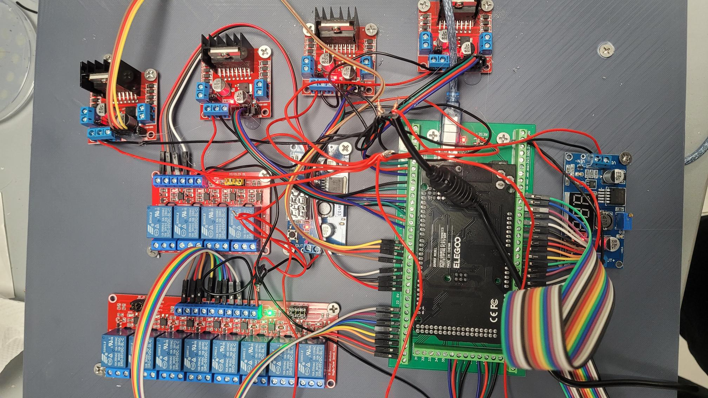
Corn-DRIVE_v_delta controller.
An advanced version of the controllers that intergrates information from multiple different sensors including light intensity, pH, TDS, water temperature, chamber temperature and humidity, and intergrates information from Corn-AI to provide highly specific response against water, nutrient, and light stress.
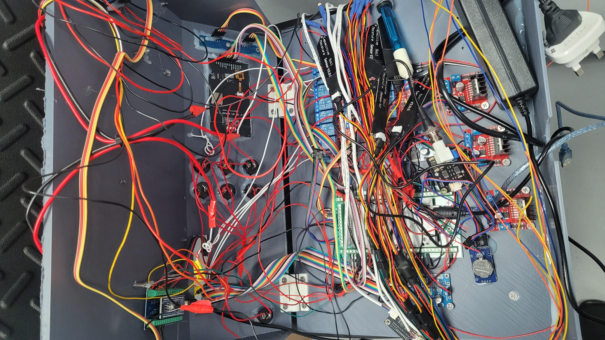
Corn-DRIVE_v_delta controller with sensors.
The controllers with the sensors.
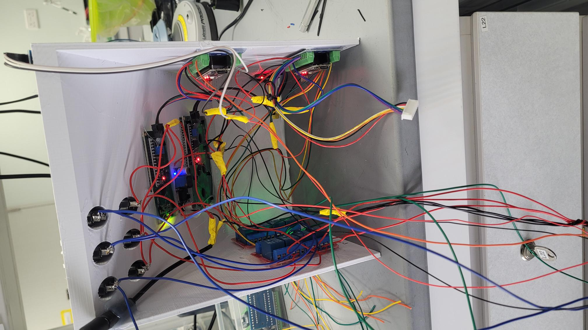
Corn Module
A view of the internals of the corn module.
CORNAI in action
A total of 6 cameras montior and sends back signal to main microcontroller against water and nutrient stress.
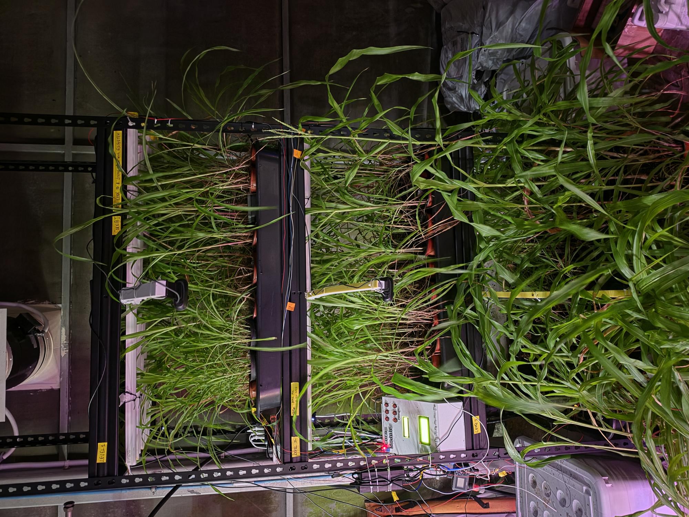
Corn Module_Rack_3.0
Corn module rack 3 during the night time with lights off.
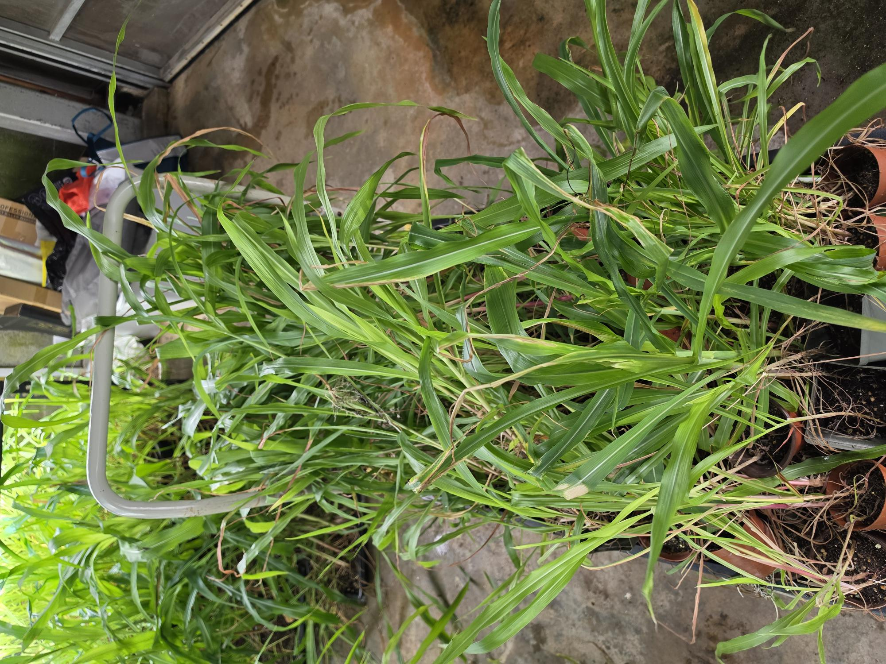
Corn harvest
Corn plants after 5 weeks of growth harvest and taken back to the insectary to feed Bicyclus anynana larvae.
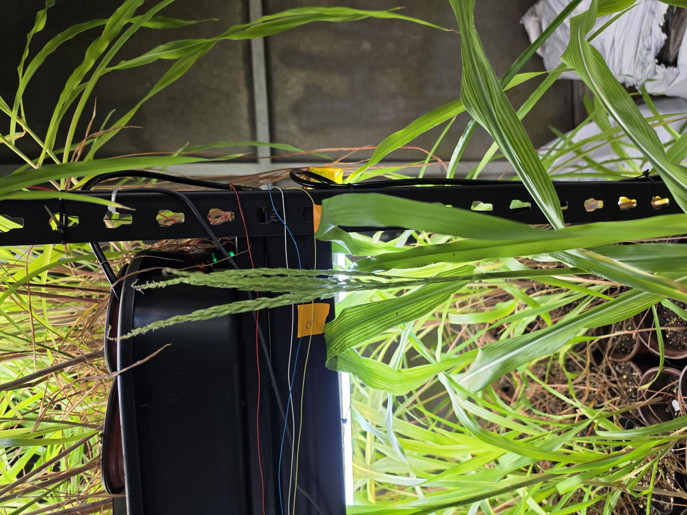
Corn plant
A plant after 6.5 weeks of growth with corn tassels.
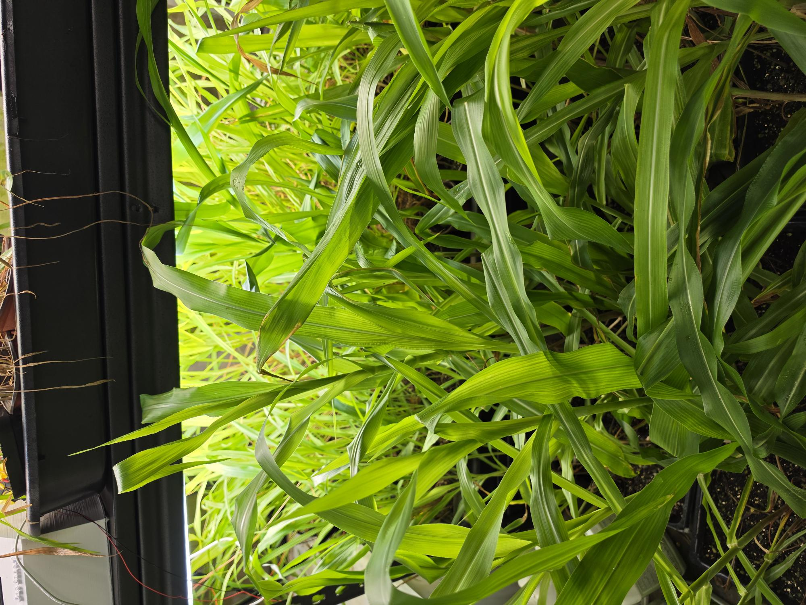
Corn plant
Corn plants after 5 weeks of growth ready for harvesting.